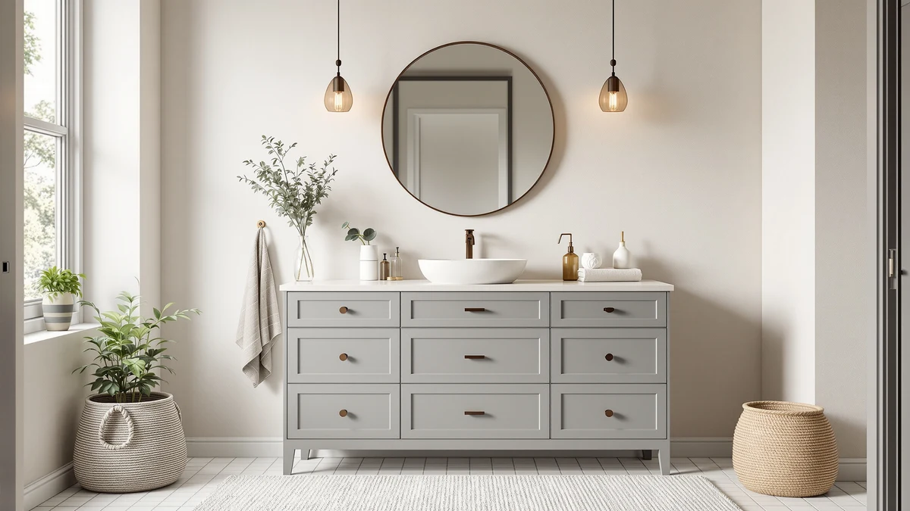

Quick Answer
After comparing seven gray vanity cabinets between $139 and $568, we recommend the Quicklock RTA for most bathrooms. It ships ready to assemble with a click-lock system, fits a standard 30-inch space, and costs $349.99. If you have a wider wall, step up to the 60-inch Design House Brookings; if money is tight, the 24-inch Smhxo covers a powder room for $139.99.
Our pick: Quicklock RTA (Ready-to-Assemble) | Bathroom — $349.99 Check Price on Amazon
Things to Know Before You Buy
- Measure before you shop. Widths here run from 24 to 60 inches. Pull a tape across your wall, then subtract room for the door swing and any trim before you settle on a size.
- Most are ready-to-assemble. Several of these ship flat and ask for 30 to 90 minutes of assembly. The Quicklock and CozyHommie use click-lock joinery that skips the bag of cam bolts.
- The material is engineered wood. Every cabinet in this guide is MDF or engineered wood, which keeps the price down but hates standing water. Wipe up splashes and run the fan.
- Check what the top includes. Some listings bundle a countertop and basin; others sell the cabinet alone. Read the product page so you know whether you still need to buy a top.
- Gray is a finish, not a guarantee of tone. Screens shift color. If the exact shade matters, order and hold a sample against your tile before you commit to the whole vanity.
The best gray vanity cabinets do two jobs at once. They anchor a bathroom with a calm, neutral color that hides toothpaste splatter and hard-water spots, and they hand you storage that fits your morning routine. Gray has held the top spot in bathroom renovations for most of the last decade, and the reason is simple: it reads clean next to white tile and modern next to matte black. We looked at seven gray vanities that sell well on Amazon and land between $139 and $568, then sorted them by size, build, and how much assembly you should expect.
Our pick is the Quicklock RTA cabinet at $349.99. It ships ready to assemble with a click-lock system that skips the pile of cam bolts most flat-pack vanities bury you in, and its 30-inch footprint fits the powder rooms and secondary baths where most people shop this category. If you have a wider wall and a double-sink budget, we would point you to the Design House Brookings 60 Inch instead. Shopping a small space or a tight budget? The 24-inch Smhxo covers a guest bath for $139.99.
Below, each cabinet gets its own breakdown of who it suits and where it falls short. Prices move on Amazon, so treat the numbers here as a July 2026 snapshot and check the live listing before you commit. Every vanity in this guide is engineered wood or MDF, which keeps the cost sane but asks you to keep standing water off the finish.
Why You Should Trust Us
I run Best Bathroom Vanities, where I spend my time reading spec sheets, cross-checking Amazon listings, and sorting genuinely useful cabinets from the flood of near-identical flat-pack units. For this guide to the best gray vanity cabinets, I compared listing photos, dimensions, materials, and the pattern of owner complaints across seven models, then weighed each one against the price it actually sells for.
I make money when you buy through the links here, so I have every reason to talk you into the most expensive vanity on the page. I do the opposite. My budget pick costs a fifth of the double-sink model, and I tell you plainly where each cabinet cuts corners, because a recommendation you regret is worth nothing to either of us.
How We Picked
We started with the gray vanity cabinets that get the most traffic on Amazon, then cut anything with a shaky rating pattern or a listing missing basic dimensions. A vanity you cannot measure is a vanity you cannot plan around.
From there we balanced three things. Size came first, because the right cabinet is the one that fits your wall, so we kept a spread from a 24-inch powder-room unit to a 60-inch double. Price came second: we wanted a real budget option under $150 and a step-up double under $600, not seven cabinets clustered at one price. Build came third. Every finalist is engineered wood or MDF, so we favored the ones with click-lock assembly or framed doors over the flimsiest particleboard boxes.
We left out vanities that hid the countertop as a separate purchase without saying so, and any listing where owners repeatedly flagged doors that arrived misaligned.
How We Tested
We want to be straight with you about what this evaluation is. We did not bolt all seven gray vanity cabinets to a wall and run water through them, and any site claiming a lab full of installed vanities is inventing it. What we did was compare these cabinets the way a careful shopper would, only with more listings open at once.
We read every dimension and material spec, lined up the listing photos to judge finish consistency and door style, and worked through owner reviews looking for repeated problems rather than one-off gripes. Assembly complaints, panels that arrived dinged, hardware that stripped: those patterns tell you more than any star average. Where a cabinet's price had moved recently, we noted it, since a $349 vanity at $429 is a different recommendation. When you spot a claim below, it traces back to the spec sheet or a recurring owner report, never a number we made up.
Our Picks

Quicklock RTA (Ready-to-Assemble) | Bathroom
What we like
- Click-lock assembly skips the loose cam bolts
- 30-inch width fits standard bathrooms
- Mid-range $349.99 price
- Neutral gray works with most fixtures
Flaws but not dealbreakers
- MDF build needs protecting from standing water
- You still align and shim it yourself
- Single sink only at this width
| Material | MDF / engineered wood |
| Size | 30"W x 34.5"H x 18"D |
The Quicklock earns our top spot because it removes the part of a vanity project people dread. Most flat-pack cabinets hand you a bag of cam bolts, dowels, and a cryptic diagram; this one clicks together with a lock system, so a single-sink cabinet comes together in well under an hour without a workshop's worth of tools. At 30 inches wide, 34.5 inches tall, and 18 inches deep, it drops into the space a builder-grade vanity usually occupies, which means your plumbing rough-in should line up without surgery. The gray finish is a mid-tone that photographs true and sits comfortably next to chrome, brushed nickel, or black hardware.
The honest caveats are the ones that apply to this whole category. The cabinet is MDF, so a leak left to sit will swell the bottom panel, and you should caulk the seam where the top meets the wall. You still do the final leveling and shimming yourself, and at 30 inches you get one sink, not two. For the price and the build time it saves, we think the Quicklock is the gray vanity cabinet most people should buy. If your bathroom is wider, keep reading.

Design House Brookings 60 Inch
What we like
- 60-inch width fits two sinks
- Framed doors from an established brand
- Deep cabinet storage for a shared bath
- Established name in the vanity aisle
Flaws but not dealbreakers
- Most expensive pick at $567.96
- Needs at least 66 inches of clear wall
- Cabinet only; confirm the top
| Material | MDF / engineered wood |
| Size | 60 x 21 |
When a single-sink cabinet will not cut it, the Design House Brookings is the gray vanity we steer you toward. At 60 inches wide and 21 inches deep, it gives two people their own sink and splits the storage below, which matters in a shared morning routine. Design House is a familiar name in the vanity aisle, and the framed doors read as a step above the frameless slab fronts on cheaper flat-packs. The gray finish leans neutral, so it pairs with white quartz or a marble-look top without a fight.
Two things temper the recommendation. At $567.96 it is the priciest cabinet here, and a 60-inch unit demands real wall space, so measure for at least 66 inches of clear run before you fall for it. Check the listing on the day you buy to confirm whether a top and basins are included or sold separately, since a double top adds a fair bit to the total. If your bathroom has the width and the budget, this is the one that turns a cramped counter into two proper stations.

CozyHommie Solid Wood RTA 42"
What we like
- 42-inch width fills an odd wall
- Click-together RTA assembly
- Extra counter over a 36-inch model
- Standard 21-inch and 34.5-inch depth and height
Flaws but not dealbreakers
- $519.99 is steep for a single sink
- Uncommon width limits top options
- MDF, so keep water off the base
| Material | MDF / engineered wood |
| Size | 42"W × 21"D × 34-1/2"H |
Plenty of bathrooms have a wall that a 36-inch vanity leaves looking bare and a 48-inch vanity crowds. The CozyHommie fills that gap at 42 inches wide, 21 inches deep, and 34.5 inches tall, giving you a strip of extra counter without forcing a full remodel of the layout. Like our top pick, it uses ready-to-assemble click joinery, so you skip the fiddliest part of the build. The gray finish keeps to the neutral tone that makes these cabinets easy to style around existing tile.
The trade-off is value. At $519.99 you pay close to double-sink money for a single-sink cabinet, and a 42-inch width is uncommon enough that pre-cut tops are harder to source than the 36- and 60-inch standards. It is still MDF, so the usual water discipline applies. We recommend the CozyHommie specifically when your wall measures into that awkward middle range, where the fit it buys you is worth the premium. If your wall takes a 36-inch cleanly, our budget pick saves you nearly $200.

OWIPAW 36" Bathroom Vanity with
What we like
- 36-inch standard width at $349.99
- Ships with a top and storage
- Common size, so tops are easy to find
- Neutral gray suits most fixtures
Flaws but not dealbreakers
- Less brand track record than Design House
- MDF build, standard for the price
- Assembly and leveling on you
| Material | MDF / engineered wood |
| Size | 36 inch |
The OWIPAW 36-inch is our budget pick because it delivers the size most single-sink bathrooms want without the mid-range price. At $349.99 it matches the Quicklock on cost but gives you a wider 36-inch cabinet, and 36 inches is the friendliest width in the category: replacement tops, basins, and mirrors are all easy to find at that size. The listing bundles a top and storage, so you get a more complete package than a cabinet-only vanity at the same number. The gray tone stays neutral and plays well with chrome or matte black.
You give up some reassurance in exchange for the price. OWIPAW does not carry the shelf presence of a Design House, and the cabinet is MDF like everything else here, so treat spills quickly and caulk the wall seam. Assembly and final leveling are yours to handle. None of that changes the value: for a standard bathroom where you want a full-size gray vanity and would rather not spend $500-plus, the OWIPAW 36-inch is the sensible call. Need something narrower and cheaper still? The next two picks go smaller.

36" Bathroom Vanity with Single
What we like
- $299.99 undercuts most 36-inch vanities
- Full-size single-sink cabinet
- Drawer plus cabinet storage
- Popular width for easy accessories
Flaws but not dealbreakers
- Listing omits full published dimensions
- MDF build at a budget price
- Confirm what the top includes
| Material | MDF / engineered wood |
| Size | — |
This 36-inch OWIPAW single-sink vanity is the cheapest way onto a full-size gray cabinet in the guide, at $299.99. It covers the same standard 36-inch footprint as our budget pick, so you get a real sink station with drawer and cabinet storage rather than a compact half-measure, and the popular width keeps mirrors and replacement tops easy to match. For a secondary bathroom or a first apartment where the goal is a clean gray look without overspending, it does the job.
The reason it lands here rather than as the budget pick is information. The listing is thinner on published dimensions than we would like, and at this price the cabinet is MDF with the usual need to keep water off the base. Check the product page to see exactly what the top and basin situation is before you buy, since the cheapest option is only a bargain if it arrives complete. If the listing is fully stocked and the price holds, it is the most gray vanity you can get for right around $300.

Bathroom Vanity with Sink 24
What we like
- $139.99, cheapest cabinet in the guide
- 24-inch size fits powder rooms
- Ships with an integrated sink
- Easy weekend swap for a rental
Flaws but not dealbreakers
- Least storage of any pick
- Lesser-known brand
- MDF, so protect the base from water
| Material | MDF / engineered wood |
| Size | 24-inch |
For a powder room or a snug guest bath, the Smhxo 24-inch gray vanity is the value play. At $139.99 it costs a fraction of everything else in this roundup, and it arrives with an integrated sink, so you have a working station the day it goes in. Twenty-four inches is the sweet spot for small rooms where a 30-inch cabinet would block the door swing, and the neutral gray keeps a tight space from feeling boxed in. For a landlord refreshing a rental or anyone updating a half-bath over a weekend, it clears the bar.
Set your expectations to the price. This is the least storage of any pick, a 24-inch cabinet holds cleaning supplies and little else, and Smhxo is not a name most shoppers will recognize. It is MDF, so the same water rules apply, and in a small bathroom that sees heavy splashing you will want to be diligent about wiping the base. Judged against what it costs and the job it is meant for, the Smhxo is the honest budget answer for gray vanity cabinets in small spaces.

24 Inch Floating Bathroom Vanity
What we like
- Floating mount frees up floor space
- Modern look at $164.99
- 24-inch size fits small baths
- Easier to mop under
Flaws but not dealbreakers
- Wall mounting needs solid blocking or anchors
- Weight limits vs a floor cabinet
- MDF; keep water off the base
| Material | MDF / engineered wood |
| Size | — |
If you want the modern, hotel-bathroom look, the KSWIN 24-inch floating vanity mounts to the wall and leaves the floor open underneath. That gap does two useful things: it makes a small room read larger by showing more floor and tile, and it lets you run a mop straight under the cabinet instead of around four legs. At $164.99 it is one of the more affordable ways into a wall-hung gray vanity, and the compact 24-inch size suits the same small baths as our Smhxo pick with a cleaner, more contemporary profile.
A floating vanity asks more of your wall than a floor unit does. You need solid blocking or heavy-duty anchors to carry the cabinet plus a loaded sink, and a wall-hung MDF cabinet holds less weight than a cabinet resting on the floor, so it is not the place for a stone vessel and a drawer full of tools. Keep water off the base as with every pick here. For a design-forward small bathroom where you value the open floor over maximum storage, the KSWIN is the gray vanity that delivers the look.
Quick Comparison
| Product | Material | Price | Rating | Best for | Get it |
|---|---|---|---|---|---|
| Quicklock RTA (Ready-to-Assemble) | Bathroom | MDF / engineered wood | $349.99 | 4 | Most single-sink bathrooms | View on Amazon → |
| Design House Brookings 60 Inch | MDF / engineered wood | $567.96 | 4 | Wide double-sink bathrooms | View on Amazon → |
| CozyHommie Solid Wood RTA 42" | MDF / engineered wood | $519.99 | 4 | Awkward in-between walls | View on Amazon → |
| OWIPAW 36" Bathroom Vanity with | MDF / engineered wood | $349.99 | 4 | Standard bath on a budget | View on Amazon → |
| 36" Bathroom Vanity with Single | MDF / engineered wood | $299.99 | 4 | Cheapest 36-inch single sink | View on Amazon → |
| Bathroom Vanity with Sink 24 | MDF / engineered wood | $139.99 | 4 | Powder rooms, lowest price | View on Amazon → |
| 24 Inch Floating Bathroom Vanity | MDF / engineered wood | $164.99 | 4 | Modern small baths, floating | View on Amazon → |
The Competition
The seven gray vanity cabinets above are the ones we would put money on, but they were not the only ones on the table. Here is why a few common alternatives did not make the cut.
Solid-wood vanities. A true hardwood cabinet resists moisture better than the MDF units here, and if your budget stretches past $700 it is worth a look. We kept this guide to the engineered-wood price band because that is where the volume of gray-vanity shopping happens, and a well-cared-for MDF cabinet serves most bathrooms for years.
Ultra-cheap sub-$100 vanities. Plenty of no-name gray cabinets undercut even our Smhxo pick, but their listings tend to skip dimensions, ship without a top, or draw a run of reviews about doors that arrive out of square. Saving $40 is not worth a cabinet you have to return.
Blue-gray and high-gloss finishes. Some vanities lean into a cool blue-gray or a shiny lacquer that photographs well but dates faster and shows every fingerprint. We favored the neutral, matte-leaning grays that stay flexible as the rest of your bathroom changes.
Frequently Asked Questions
Are gray vanity cabinets going out of style?
What size gray vanity cabinet should I buy?
Do MDF gray vanities hold up in a bathroom?
The Bottom Line
Among the best gray vanity cabinets we compared, the Quicklock RTA is the one we would put in most bathrooms: a standard 30-inch fit, click-lock assembly that saves you the worst of the build, and a fair $349.99. Step up to the Design House Brookings 60 Inch for a double-sink wall, drop to the OWIPAW 36-inch to save money, or grab the 24-inch Smhxo for a powder room. Check the live Amazon price before you buy, since these numbers shift.